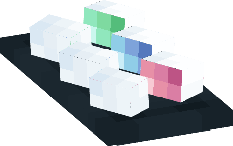

其他设定
原创美食
普莱尔糕点--三色奶糕
从民间美食到上层宴会中都不可或缺的甜点，有清脆与软糯款。拥有糯米做成的奶白外皮，淡抹茶、浆果与丝绸花馅组成丰富馅料，别具一番风味——据说这道菜品的开发者获得了普莱尔三等荣誉奖


投诉信上飘飞的字迹:
开发咸味和辣味馅料的应该放逐到荒原！！！
巴亚伦--帝王赤尾鲜
巴亚伦将第四法案之后的海妖食物设为违法食品，但是在第四法案之前的海妖食物又怎么能算作违法食品呢？

劲道弹牙的海鲜刺身，咀嚼的时候会在嘴中蠕动，绝对新鲜，绝对刺激，搭配甜味蘸料，味道绝对顶配。
“我说真的，没人觉得这是个来快钱好生意嘛？这个尾巴每次只切掉三分之一就还能自己再长出来诶！”
“在该食品开始蠕动时食用，切忌煮熟，拔刺，泡水，冷藏，否则后果自负。”
“你也不想盘子里的肉块活过来对吧？”
菜谱上潦草的批注:
海妖肉遇到高温或者水会加速生长，煮一半说不定会活过来
欧亚特拉——热乳茶
算是欧亚特拉的传统美食——在世界各地(也许除了岚斯优特）颇有美誉。传统的热乳茶由雪牛奶、暖油和针叶茶搭配熬煮而成（可以根据个人喜好添加各类草药调味），味道香醇浓厚，驱寒暖身。在寒冷地方来上一冒烟的满满一大杯简直不要太惬意。

日记本上娟秀的颤抖字迹：
……我还记得在欧亚特拉的那一年，匿影笑话我，说最正经的热乳茶是不加佐料的。
原创节日
纯粹日
教会的传道节，会在这一天面向教徒发物资。
息魂日
息魂日的日期是每年的六月十五，有扫墓，折花钱，点星灯，烧冥书的习俗，是纪念逝者的节日，在百年战争期间成型。
原创植物
摇光草
可在黑暗环境中发光；香味有安神的功效，晚上的香味更浓。能制成夜光涂料，同时是安神药的重要原料之一。多生长在繁花森林、沼泽中的空旷处，家养容易死，生命力不强。
瓦花
可止血；味道甜，吃多头晕。是恶魂之泪的平替，能制成生命恢复药水。多生长在繁花森林、悬崖或屋脊上，生命力极强，各地都有分布。
浮水蝶
花苞深蓝，花瓣浅蓝；香味有毒，易致幻；畏光，见光易枯萎。一般用来制毒品、提神药水或迷药。多生长在繁茂洞穴的水中，生命力较强。
指南灯
一茎生两灯，蓝灯指南，黄灯指北。可以指路、当地标。多生长在繁花森林、平原。
地上星（寒花）
味苦，一次吃太多多易消化不良；香淡；一开一大片，天越冷开的越旺。是北境生物菜谱上的常客。一般生长在云杉林、巨杉林、繁花森林或是雪原。
定魂叶
能让食用者昏睡不醒，至少一周起步，是睡神药水的主要原料。多生长在繁茂洞穴和底下古城。
懒花
躺着开的花；香苦味酸，食用多了易腹泻。可以制作药水中和剂，即低配版牛奶，可消除睡神药水、标记药水、凋零效果外的所有负面效果。多生长在阳光充足的平原或者繁花森林。
蓝萝藤
蓝花青果的藤蔓，果子的味道似甜浆果，摇动有金属撞击声。它可以人工合成锋利Ⅰ附魔书；制作青色染料；制成苦味熏香或者微甜的制茶。一般生长在森林或洞穴中。
原创药水
安神药水
能安神、稳定异能、缓解痛苦。
配料：粗制的药水+摇光草、糖、白桦叶/蒲公英（+任意可食用花卉。作用：调味。）
提神药水
更好用但有副作用的力量药水。副作用：疲乏，恶心无力。
配料：力量药水+少量浮水蝶+懒花
抑制药水
可以抑制异能，持续时间日——月——年随药效不等。
配料：虚弱药水+瞬间伤害药水（+红石 红石作用：延长药效）
标记药水
能感应被标记者的大体位置。
配料
标记：滞留药水+发光浆果+悦灵翅膀/探嗅兽壳粉末+红石/萤石粉+标记物
感应：对应标记药水+少量牛奶（作用：防止相互感应）
睡神药水
能让服用者陷入可控睡眠。
配料：粗制的药水+定魂叶（+少量牛奶。作用：控制药效）
末影药水
可使服用者暂时获得末影人特性。
配料：
浸透防火药水的地狱疣+岩浆=粗制的药用岩浆
粗制的药用岩浆+末影珍珠*3+浸透防火药水的紫颂果
转生水
类似于“九转回魂丹”，更够“起死回生”.
使用条件：尸体完整未腐烂，之前未服用过转生水。
配料：再生药水+美西螈角+龙息+下界之星+不死图腾+金色夭车菊